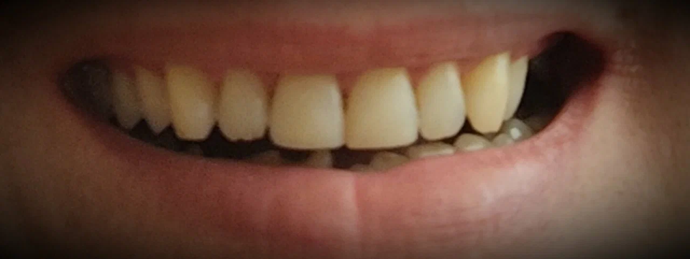

Консультация
Обсуждение жалоб, ситуации и возможного плана лечения на приёме.
Уточнить запись ↗Стоматологическая клиника в Сургуте
Стоматология Б. В. Кузнецова на улице 30 лет Победы. Приём по предварительной записи в будние дни.


Реальная фотография из карточки клиникиПодход к лечению
В открытых источниках нет полного прайса и перечня процедур. Клиника и отзывы пациентов подтверждают лечение и протезирование; конкретную возможность приёма лучше уточнить по телефону.
Обсуждение жалоб, ситуации и возможного плана лечения на приёме.
Уточнить запись ↗Стоматологическое лечение с индивидуальным подходом, отмеченным пациентами в отзывах.
Уточнить услугу ↗Публичный прайс в переданной карточке не указан. Цена зависит от клинической ситуации и плана лечения.
Позвонить в клиникуО клинике
Пациенты отмечают профессионализм врача, внимательное отношение, приём по времени и помощь администратора с выбором удобной записи.
На Яндекс Картах есть отметка «Данные от Росздравнадзора», но номер лицензии в открытой карточке не показан. Его следует запросить у клиники перед обращением.
Упоминание в отзывах
Пациентка Татьяна отмечает многолетнее лечение и протезирование, внимательное отношение и индивидуальный подход врача. Официальная биография, стаж и образование в карточке организации не указаны.
Отзывы на Яндекс Картах
Выбирал клинику по совету близких. Спустя три года после лечения результат сохраняется, нареканий нет.
Много лет прохожу здесь лечение и протезирование. Отмечу профессионализм врача, индивидуальный подход, вежливого администратора и приём без очереди.
Обратилась для удаления зуба, но услугу в клинике не получила и была направлена в другое учреждение.
Как проходит обращение
Сообщите, что вас беспокоит, и уточните, оказывает ли клиника нужную услугу.
Администратор подберёт доступное время в будний день.
Клиника находится на втором этаже, кабинет № 221.
Перед визитом
Запись доступна по телефону +7 (3462) 50-10-15. Онлайн-запись в карточке не указана.
По данным Яндекс Карт, суббота и воскресенье — выходные. В будни клиника работает с 09:00 до 19:00.
Один из пациентов сообщает о такой возможности. Актуальный перечень документов нужно подтвердить у администратора.
В карточке Яндекс Карт вход отмечен как недоступный для инвалидной коляски. Рекомендуем заранее позвонить и уточнить возможность помощи.
Контакты